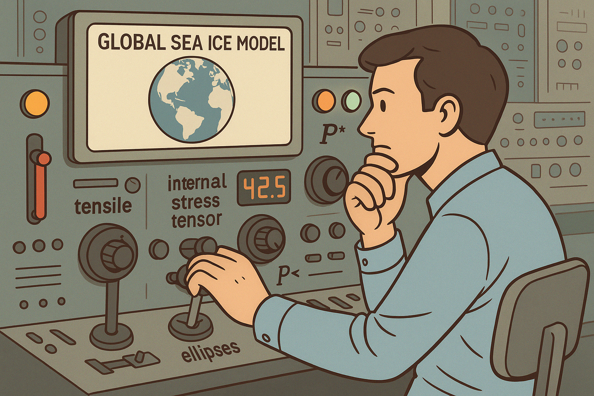
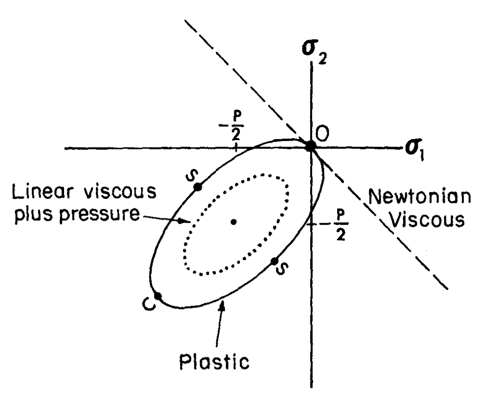
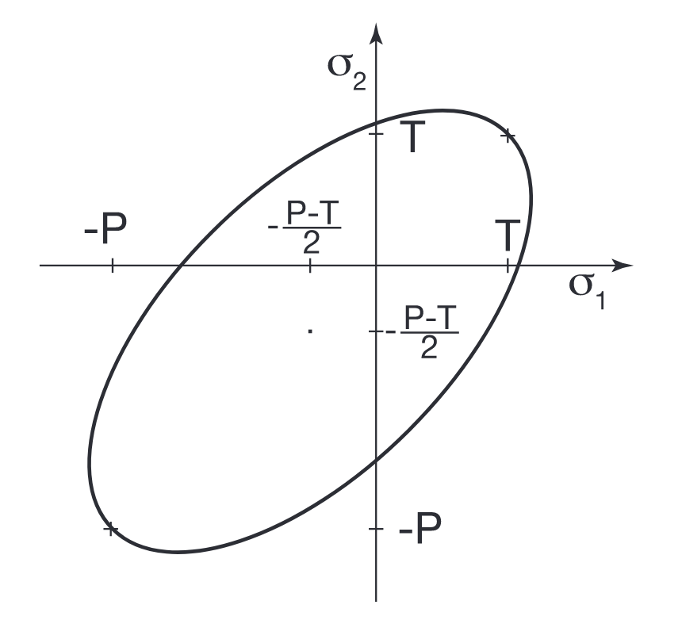
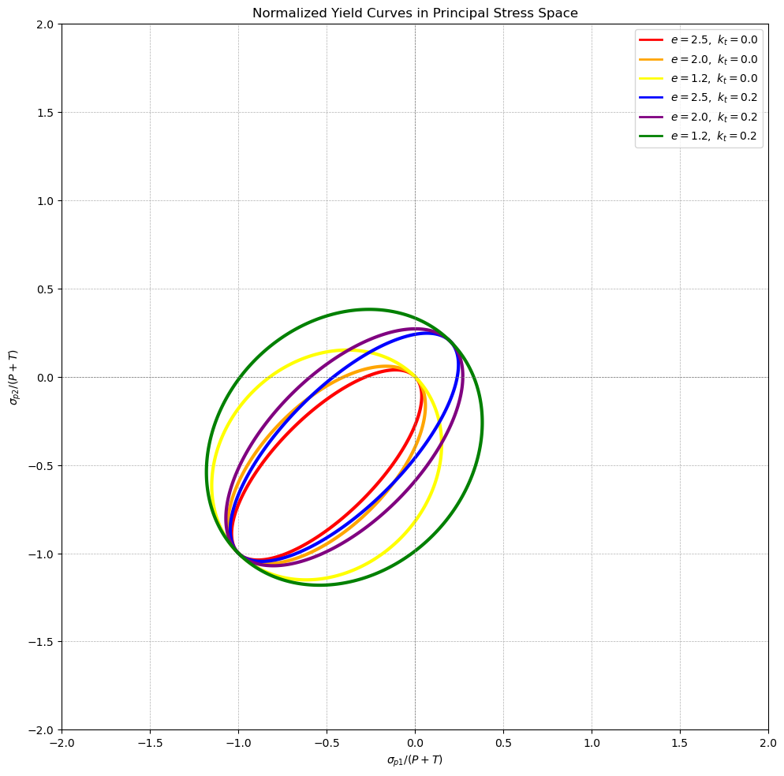
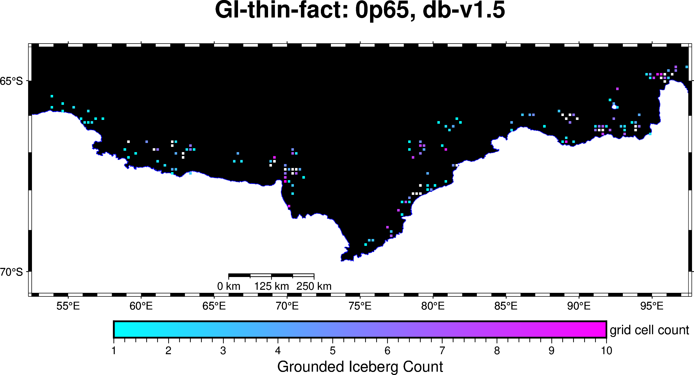
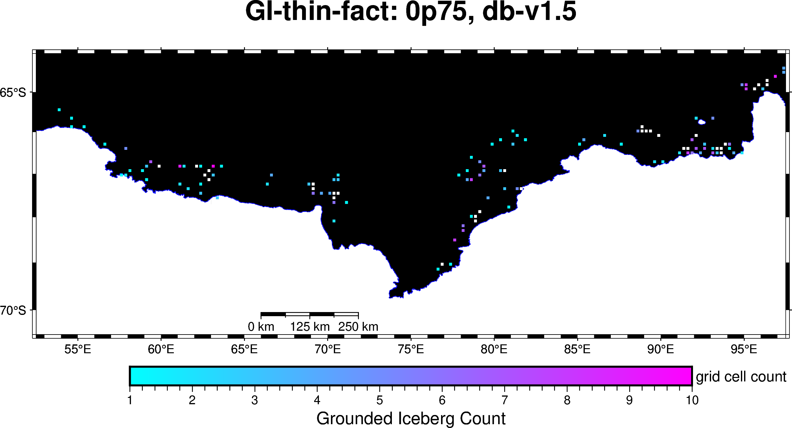
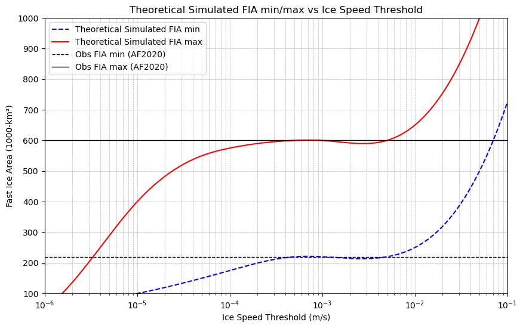

2025-06-05
Paper 1 Outline
Study Objectives
Can a meaningful approximation of circumpolar Antarctic fast ice be simulated in CICE-standalone?
If so, what are the CICE parameters that influence fast ice:
growth
stability
seasonality/breakout
Which CICE parameter(s) is the model most sensitive too?
Do the thermodynamics continue to “behave” when CICE is heavily tuned for fast ice?
What is the optimal concentration of grounded icebergs that should be used?
Is there a relationship between sea ice speed threshold and fast ice area?

Source: Figure 11a from Fraser et al. (2023), Reviews of Geophysics
for the remainder of the presentation I’ll be referring to simulated fast ice using VP/EVP rheological numerical solver as AFIM
stress tensor formula:
tensile stress (\(\mathbf{k_T}\)) of the internal ice strength equation
ellipse eccentricity ratio (\(\mathbf{e}\)) in the bulk viscosity term of the internal stress tensor
ice strength formula:
\(\mathbf{P^\ast}\) ice strength parameter
\(\mathbf{C^\ast}\) concentration scaling parameter
pre- & post-processing:
grounded iceberg concentration (\(\mathbf{GI_{cn}}\)) pre-model modification of underlying grid/landmask
ice speed threshold (\(\mathbf{U_{th}}\)) post-model analysis method
…that is adjacent to coastlines or shallow Arctic regions.
Sea ice dynamics is often expressed as: \[\label{eq:1} m \frac{\partial \mathbf{u}}{\partial t} = -mf \hat{\mathbf{k}} \times \mathbf{u} + \nabla \cdot \boldsymbol{\sigma} + \boldsymbol{\tau}_a + \boldsymbol{\tau}_o + \boldsymbol{\tau}_b + \boldsymbol{F}_b\] where:
\(m\) : ice mass per unit area
\(f\) : Coriolis parameter
\(\mathbf{u}\) : horizontal ice velocity vector
\(\hat{\mathbf{k}}\) : vertical unit vector
\(\boldsymbol{\sigma}\) : internal ice stress tensor
\(\nabla \cdot \boldsymbol{\sigma}\) : strain rate, fast ice parameterisation
\(\boldsymbol{\tau}_a\) : atmospheric stress (wind)
\(\boldsymbol{\tau}_o\) : ocean stress (currents)
\(\boldsymbol{\tau}_b\) : seabed grounding stress
\(\boldsymbol{F}_b\) : body forces (e.g., sea surface tilt)
\[\label{eq:2} P = P^\ast h e^{-C^\ast(1-A)}\] where:
\(h\) : mean sea ice thickness (typically in metres)
\(A\) : sea ice concentration (percentage of a grid cell area)
\(P^\ast\) : ice strength parameter \(C^\ast\) : concentration scaling parameter
AFIM requires tensile stress …another way to frame
tensile stress is sea ice resistance to
divergence
The internal stress tensor (\(\boldsymbol{\sigma}\), eqn.[eq:1]) is a
function of the strain rate (\(\boldsymbol{\dot{\epsilon}}\)) and the
internal ice strength (\(P\), eqn.[eq:2]): \[\label{eq:3}
\sigma_{ij} = 2\eta \, \dot{\epsilon}_{ij} + \left( \zeta - \eta
\right) \delta_{ij} \, \dot{\epsilon}_{kk}\] where:
\(\sigma_{ij}\) : component of the internal stress tensor
\(\dot{\epsilon}_{ij}\) : strain rate tensor component
\(\dot{\epsilon}_{kk}\) : divergence of velocity (i.e. \(\dot{\epsilon}_{xx} + \dot{\epsilon}_{yy}\))
\(\delta_{ij}\) : kronecker delta function
…and importantly, both viscosities are dependent up on internal ice strength (\(P\), eqn.[eq:2]):
shear viscosity \[\label{eq:shearvisc} \zeta = \frac{P+T}{2 \Delta}\] bulk viscosity \[\label{eq:bulkvisc} \eta = \frac{P+T}{2 \Delta e^2} = \frac{\zeta}{e^2}\]
AFIM requires a lower value of ellipse ratio
From eqn.[eq:3] the principal stress of \(\boldsymbol{\sigma_{ij}}\) are represented here with and without a tensile ice strength parameter
From eqn.[eq:bulkvisc], the ellipse eccentricity is
No tensile strength
 Source: Figure 2 from Hibler
(1979), Journal of Physical Oceanography With tensile
strength
 Source: Figure 1 from König-Beatty (2010),
Journal of Physical Oceanography
AFIM requires a lower value of ellipse ratio

AFIM requires grounded icebergs
AFIM requires the right concentration of grounded icebergs


AFIM requires a good approximation of a sea ice speed threshold

Relevant Model Configuration/Setup
CICE version 6.4.1 not coupled to a ocean (“standalone”)
\(1/4^{\circ}\) global tri-polar (ACCESS-OM2-025) grid (B-grid)
revised Elastic-Viscous-Plastic rheology Bouillon et. al (2013), Ocean Modelling
Thermodynamic time-step 1800 seconds (dt)
240 thermodynamic sub-cycles per time-step
(ndte)
No initial conditions
No bathymetry
Modified landmask representing grounded icebergs based on Pat Wongpan’s grounded iceberg database
Atmospheric forcing; hourly wind velocity, downward shortwave, downward longwave, specific humidity, precipitation
Oceanic forcing; daily sea surface temperature, salinity, current velocity
daily-average output of relevant sea ice state variables: concentration, thickness and velocity
AFIM is marginally sensitive to \(C^\ast\)
AFIM is marginally sensitive to \(C^\ast\)
AFIM is sensitive to \(P^\ast\)
AFIM is sensitive to \(P^\ast\)
AFIM is highly sensitive to ellipse ratio
AFIM is highly sensitive to ellipse ratio
AFIM should have tensile stress
…but may not be as sensitive as it is ellipse ratio
AFIM should have tensile stress
AFIM requires the right concentration of grounded icebergs
AFIM requires sensible ice speed thresholds
AFIM requires parameterisation
Tuning CICE for rheology favouring fast ice
Tuning CICE for rheology favouring fast ice